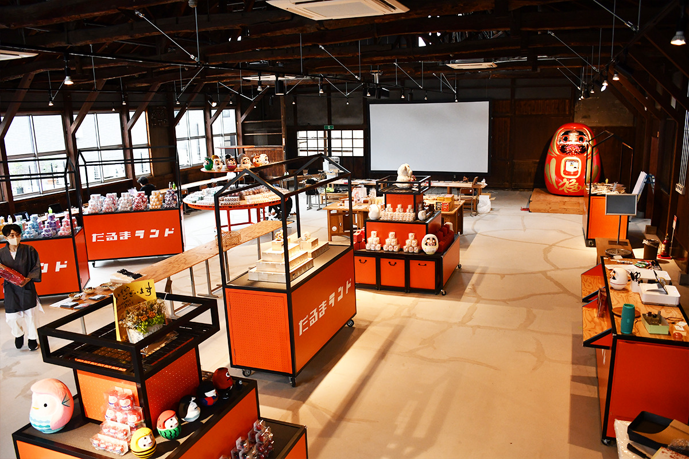
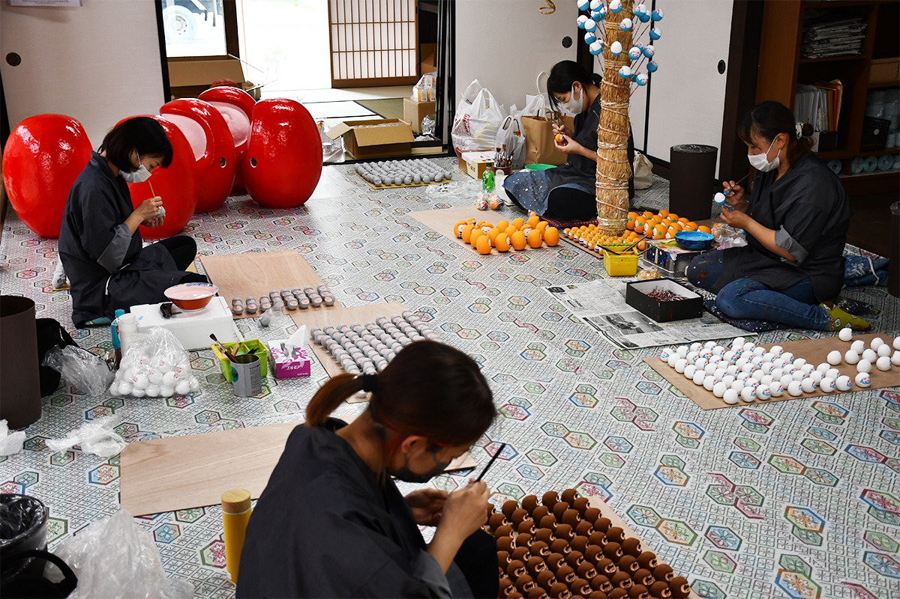
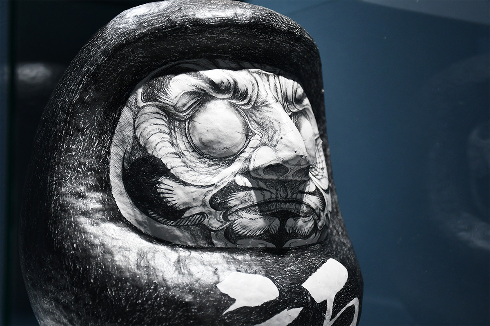
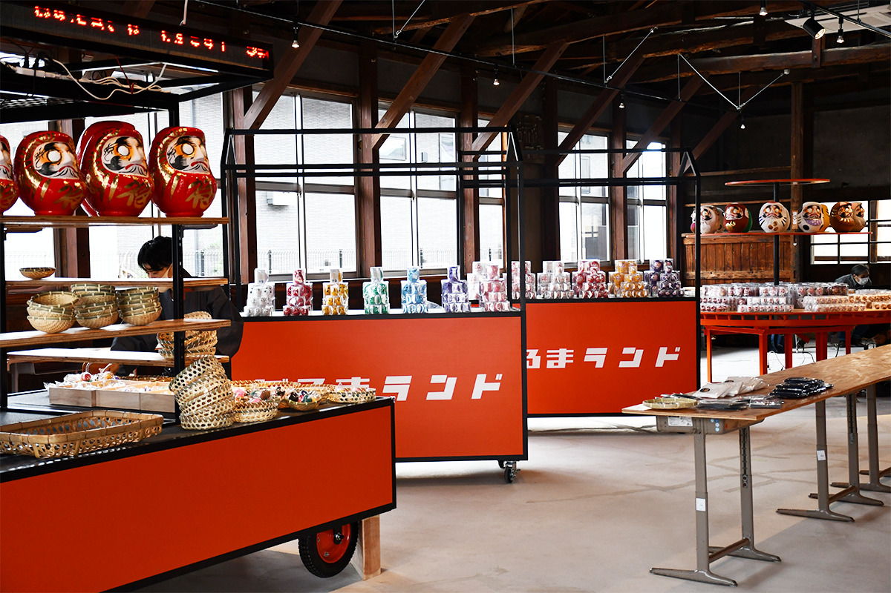
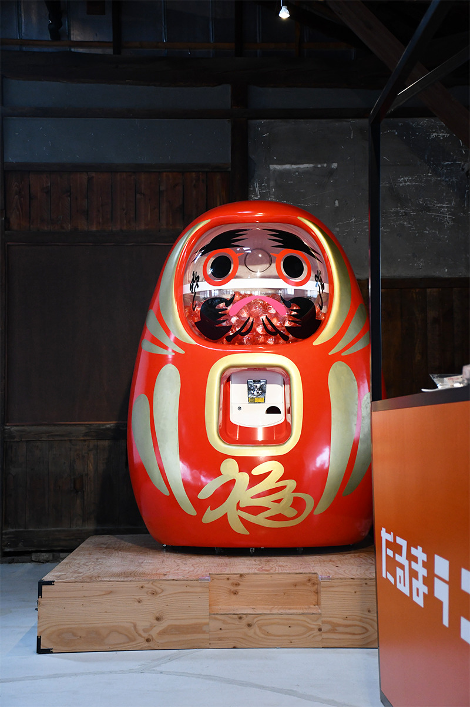
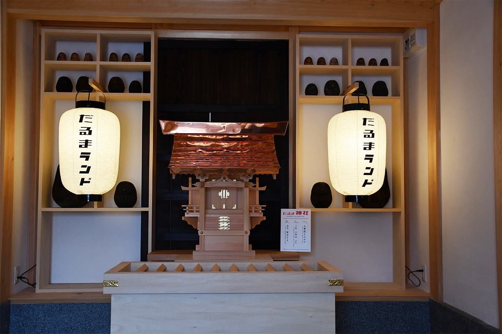

Префектура Фукусима · Сиракава · ремёсла
Daruma Land в Сиракаве: где расписывают даруму и где можно попробовать самому

Мастерская Shirakawa Daruma Souhonpo делает даруму в Сиракаве около 300 лет. В 2021 году она открыла Daruma Land, место, где эту красную куклу-неваляшку можно увидеть, понять и расписать самому.
Открытие
Новая жизнь старых домов
Daruma Land открылся 8 июля 2021 года после ремонта, который шёл около трёх лет. Девиз у него простой: «Полюбите даруму!», а устроен он так, чтобы гость мог посмотреть, узнать и развлечься.
Самым старым постройкам около 150 лет, их отремонтировали, а стоянку обнесли каменной кладкой, похожей на стены настоящего замка. Внутри шесть частей: мастерская, выставочный зал, учебный зал, магазин с местом для росписи, святилище дарумы и кафе под открытым небом. Вход в 2021 году был бесплатным.
Мастерская
Роспись на глазах у гостей
В мастерской можно подойти близко и смотреть, как мастера расписывают даруму.

В учебном зале по шагам показывают, как рождается дарума: её видел каждый, но мало кто знает, как её делают.
Выставка
Дарума без привычных рамок
В выставочном зале показывают даруму, сделанную вместе с компаниями и с известными персонажами, и проводят временные выставки, где художники пробуют, чем ещё может быть эта кукла.

Магазин
Купить, расписать и сыграть
В магазине продают даруму всех размеров и здесь же предлагают расписать свою. Для развлечения есть фирменная игра на основе «Дарума-сан га коронда», японской детской игры, похожей на «Тише едешь, дальше будешь», и гача высотой два метра: автомат с сюрпризами в форме огромной дарумы.


Если нужно передохнуть, в кафе под открытым небом подают лёгкую еду из местных продуктов.
Святилище
Помолиться своей даруме
Склад 1879 года превратили в святилище дарумы. Здесь каждый может сам помолиться перед своей дарумой и загадать желание.

Daruma Land
- Адрес
- префектура Фукусима, Сиракава, Ёкомати, 30
- Телефон
- +81 248-23-3978
- Часы работы
- 10:00–17:00
- Выходные
- нет
- Цены / Вход
- бесплатно
- Как добраться
- стоянка на 30 машин, есть места для автобусов
- Сайт
- darumaland.jp